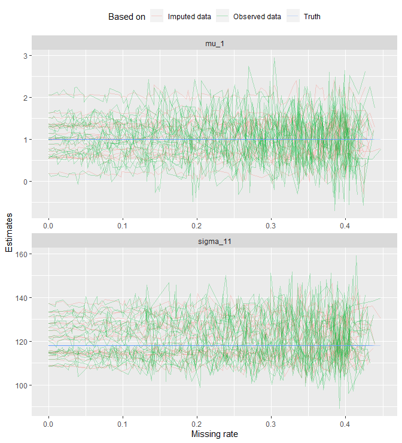
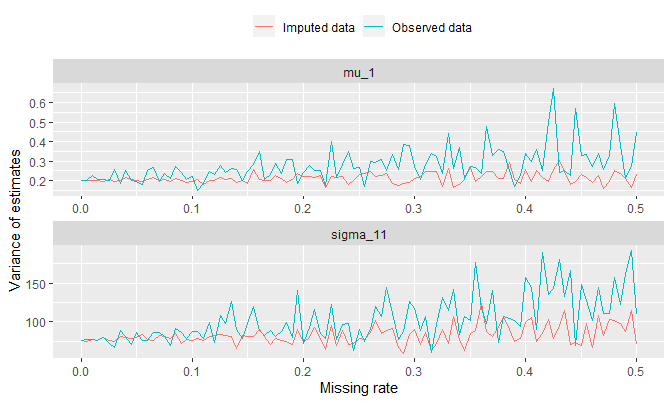

The following external R packages/functions are used:
library(dplyr)
library(ggplot2)
gather <- tidyr::gather
grid.arrange <- gridExtra::grid.arrange
mvrnorm <- MASS::mvrnorm
separate <- tidyr::separate
unite <- tidyr::unite1. Introduction
Assuming normality of the data, this note demonstrates the procedure to impute missing components in each data point using the EM algorithm. We will first simulate iid multivariate normal samples, randomly replace some of the components in the data with NA’s, and apply EM algorithm to impute those components. We will compare values of the original parameter, the estimate computed by imputed data, and the estimate computed using only the observed data to measure a performance of imputation.
2. Imputation
Terminology
In this note, the following terms will be used in a following context:

- data point: an entire row in a table (a green box)
- data or dataset: the table itself (a big black box)
- component: a subset of data point (e.g. a lightblue grey box)
The algorithm
Before generating the data to fiddle with, I will first describe how this algorithm works.
Assuming \(X_i = (X_{i1}, \dots, X_{ij}, \dots, X_{ip}) \stackrel{iid}{\sim} N_p(\mu, \Sigma)\), let’s define: \[C_{ij} := \begin{cases} 1 & X_{ij} \text{ is observed} \\ 0 & X_{ij} \text{ is missing} \end{cases}\]
and \(O_i\) and \(M_i\) as:
\[\begin{align*} O_i &:= \{j \text{ | } C_{ij} = 1 \} \\ M_i &:= \{j \text{ | } C_{ij} = 0 \} \end{align*}\]i.e. \(O_i\) and \(M_i\) are sets of \(j\) values in \(X_i\) that are observed and missing respectively. Since every component in \(X_i\) is either observed or missing, we see that: \[O_i \cup M_i = \{1, 2, \dots, n \}\] and also: \[O_i \cap M_i = \varnothing\] Assume \(|M_i| < n\) for all \(i\) (where \(|M_i|\) denotes the cardinality of \(M_i\)), i.e. no data points have all the components missing, i.e. every data point has at least one component that is observed. For example, if \(n = 5\), \(p = 4\), \(X_i \stackrel{iid}{\sim} N_4 (\mu, \Sigma)\) for some \(\mu\) and \(\Sigma\), and: \[\mathbf{X} := \begin{bmatrix} X_1^T \\ X_2^T \\ X_3^T \\ X_4^T \\ X_5^T \end{bmatrix}_{5 \times 4} = \begin{bmatrix} \text{NA} & \text{NA} & 0.7213 & \text{NA} \\ 1.2607 & \text{NA} & -2.0860 & \text{NA} \\ \text{NA} & 0.2322 & \text{NA} & 2.1117 \\ -1.3510 & -1.4308 & -0.1900 & 0.9055 \\ -0.4004 & \text{NA} & 0.1413 & 0.0657 \end{bmatrix}_{5 \times 4}\] then: \[C = \begin{bmatrix} 0 & 0 & 1 & 0 \\ 1 & 0 & 1 & 0 \\ 0 & 1 & 0 & 1 \\ 1 & 1 & 1 & 1 \\ 1 & 0 & 1 & 1 \end{bmatrix} \implies \begin{cases} O_1 = \{3 \}, & M_1 = \{1, 2, 4 \} \\ O_2 = \{1, 3 \}, & M_2 = \{2, 4 \} \\ O_3 = \{2, 4 \}, & M_3 = \{1, 3 \} \\ O_4 = \{1, 2, 3, 4 \}, & M_4 = \{ \} \\ O_5 = \{1, 3, 4 \}, & M_5 = \{ 2 \} \end{cases}\]
That is, the assumption prevents us to consider data points that look like \(\text{(NA, NA, NA, NA)}\) in \(\mathbf{X}\). Notice that in the example above, no \(M_i\) is equal to \(\{1, 2, 3, 4 \}\).
Let’s also suppose that we somehow have \(\theta^{(0)} = (\mu^{(0)}, \Sigma^{(0)})\), the initial estimate for parameters. We may get this by computing estimates using the observed components only. Details for the initial estimate will be discussed in a moment.
How it works
“E” stands for the expectation, and “M” stands for the maximization. The EM algorithm is an optimization algorithm that maximizes the “expected complete data log likelihood” by some iterative means under the (conditional) distribution of unobserved components. In other words, the expectation step (or E-step) at iteration \(t\) computes:
\[\begin{align*} Q(\theta \text{ | } \theta^{(t)}) &:= E_{\theta^{(t)}} \big[ \log L(\theta ; \mathbf{Y}_{O}, \mathbf{Y}_{M} ) \text{ | } \mathbf{Y}_{O} = \mathbf{y}_O \big] \\ &= \sum_{i = 1}^{n} E_{\theta^{(t)}} \big[ \log L(\theta ; Y_{iO_i}, Y_{iM_i} ) \text{ | } Y_{i O_i} = y_{i O_i} \big] \end{align*}\]where:
- \(\mathbf{Y} = (\mathbf{Y}_O, \mathbf{Y}_M)\): a complete data, or a collection of all \(n\) data points
- \(\mathbf{Y}_O\): a collection of all observed components
- \(\mathbf{Y}_M\): a collection of all missing (or unobserved) components
- \(Y_i = (Y_{i O_i}, Y_{i M_i})\): a complete \(i\)th data point
- \(Y_{i O_i}\): an observed component of the \(i\)th data point
- \(Y_{i M_i}\): a missing component of the \(i\)th data point
\(E_{\theta^{(t)}}(\cdot \text{ | } Y_O = y_O)\) means an expectation under \(Y_{M} \text{ | } (Y_O = y_O, \theta^{(t)})\). And due to the iid assumption of data points, we have \(\log f(\mathbf{Y}) = \sum_{i = 1}^{n} \log f(Y_i)\).
The maximization step (or M-step) at iteration \(t\) finds: \[\theta^{(t + 1)} := \underset{\theta}{\text{argmax}} \{ Q(\theta \text{ | } \theta^{(t)}) \}\] These two steps are repeated until the parameter estimate converges.
E-step
Say we’re at iteration \(t\) with \(\theta^{(t)} = (\mu^{(t)}, \Sigma^{(t)})\). For each \(X_i \sim N_p (\mu, \Sigma)\), let \(Q_i(\theta \text{ | } \theta^{(t)})\) be the expected log likelihood. This is equal to:
\[\begin{align*} &E_{\theta^{(t)}} \big[ -\frac{1}{2} \log |2 \pi \Sigma | - \frac{1}{2} (X_i - \mu)^T \Sigma^{-1} (X_i - \mu) \text{ | } X_{i O_i} = x_{i O_i} \big] \\ =& -\frac{1}{2} \log | 2 \pi \Sigma | - \frac{1}{2} E_{\theta^{(t)}} \big[ (X_i - \mu)^T \Sigma^{-1} (X_i - \mu) \text{ | } X_{i O_i} = x_{i O_i} \big] \\ =& -\frac{1}{2} \log | 2 \pi \Sigma | - \frac{1}{2} E_{\theta^{(t)}} \big[ (J_{\sigma_i} X_i - J_{\sigma_i} \mu)^T J_{\sigma_i} \Sigma^{-1} J_{\sigma_i}^T (J_{\sigma_i} X_i - J_{\sigma_i} \mu) \text{ | } X_{i O_i} = x_{i O_i} \big] \end{align*}\]where \(J_{\sigma_i}\) is a \(p \times p\) permutation matrix for \(X_i\) so that \(J_{\sigma_i} X_i = (X_{i M_i}, X_{i O_i})\). For example: if \(X_i = (\text{NA}, 2, 3, \text{NA})\), then we may let: \[J_{\sigma_i} = \begin{bmatrix} 1 & 0 & 0 & 0 \\ 0 & 0 & 0 & 1 \\ 0 & 1 & 0 & 0 \\ 0 & 0 & 1 & 0 \end{bmatrix}\] so that: \[J_{\sigma_i} X_i = \begin{bmatrix} \text{NA} \\ \text{NA} \\ 2 \\ 3 \end{bmatrix}\]
Also, for any \(\sigma_i\) (permutation), we get \(J_{\sigma_i}^T J_{\sigma_i} = I_p\) (i.e. \(J_{\sigma_i}^{-1} = J_{\sigma_i}^T\)). Now:
\[\begin{align*} &E_{\theta^{(t)}} \big[ (J_{\sigma_i} X_i - J_{\sigma_i} \mu)^T J_{\sigma_i} \Sigma^{-1} J_{\sigma_i}^T (J_{\sigma_i} X_i - J_{\sigma_i} \mu) \text{ | } X_{i O_i} = x_{i O_i} \big] \\ =& E_{\theta^{(t)}} \Big[ \begin{bmatrix} X_{i M_i} - \mu_{M_i} \\ X_{i O_i} - \mu_{O_i} \end{bmatrix}^T \begin{bmatrix} (\Sigma^{-1})_{M_i M_i} & (\Sigma^{-1})_{M_i O_i} \\ (\Sigma^{-1})_{O_i M_i} & (\Sigma^{-1})_{O_i O_i} \end{bmatrix} \begin{bmatrix} X_{i M_i} - \mu_{M_i} \\ X_{i O_i} - \mu_{O_i} \end{bmatrix} \text{ | } X_{i O_i} = x_{i O_i} \Big] \\ =&\hspace{16pt} E_{\theta^{(t)}} \Big[ ( X_{i M_i} - \mu_{M_i})^T (\Sigma^{-1})_{M_i M_i} ( X_{i M_i} - \mu_{M_i}) \text{ | } X_{i O_i} = x_{i O_i} \Big] \\ &+ 2 E_{\theta^{(t)}} \Big[ ( X_{i O_i} - \mu_{O_i})^T (\Sigma^{-1})_{O_i M_i} ( X_{i M_i} - \mu_{M_i}) \text{ | } X_{i O_i} = x_{i O_i} \Big] \\ &+ \hspace{5pt} E_{\theta^{(t)}} \Big[ ( X_{i O_i} - \mu_{O_i})^T (\Sigma^{-1})_{O_i O_i} ( X_{i O_i} - \mu_{O_i}) \text{ | } X_{i O_i} = x_{i O_i} \Big] \\ =&\hspace{16pt} E_{\theta^{(t)}} \Big[ ( X_{i M_i} - \mu_{M_i})^T (\Sigma^{-1})_{M_i M_i} ( X_{i M_i} - \mu_{M_i}) \text{ | } X_{i O_i} = x_{i O_i} \Big] \\ &+ 2 ( x_{i O_i} - \mu_{O_i})^T (\Sigma^{-1})_{O_i M_i} E_{\theta^{(t)}} \Big[ X_{i M_i} - \mu_{M_i} \text{ | } X_{i O_i} = x_{i O_i} \Big] \\ &+ \hspace{5pt} ( x_{i O_i} - \mu_{O_i})^T (\Sigma^{-1})_{O_i O_i} ( x_{i O_i} - \mu_{O_i}) \end{align*}\]Given \(\theta^{(t)} = (\mu^{(t)}, \Sigma^{(t)})\) at iteration \(t\), we have that for all \(i\)’s with \(|M_i| \neq 0\): \[X_{iM_i} \text{ | } \big( X_{i O_i} = x_{i O_i}, \theta^{(t)} \big) \sim N_{|M_i|} \big(\mu_{M_i}^{(t)} + \Sigma_{M_i O_i}^{(t)} (\Sigma_{O_i O_i}^{(t)})^{-1} (x_{i O_i} - \mu_{O_i}^{(t)}), \Sigma_{M_i M_i \cdot O_i}^{(t)} \big)\] where \(\Sigma_{M_i M_i \cdot O_i}^{(t)} := \Sigma_{M_i M_i}^{(t)} - \Sigma_{M_i O_i}^{(t)} (\Sigma_{O_i O_i}^{(t)})^{-1} \Sigma_{O_i M_i}^{(t)}\). Define: \[\widetilde{\mu}_{i M_i}^{(t)} := \mu_{M_i}^{(t)} + \Sigma_{M_i O_i}^{(t)} (\Sigma_{O_i O_i}^{(t)})^{-1} (x_{i O_i} - \mu_{O_i}^{(t)})\] so that we can write: \[X_{iM_i} \text{ | } \big( X_{i O_i} = x_{i O_i}, \theta^{(t)} \big) \sim N_{|M_i|} \big(\widetilde{\mu}_{i M_i}^{(t)}, \Sigma_{M_i M_i \cdot O_i}^{(t)} \big)\] That is: \[X_{iM_i} - \mu_{M_i} \text{ | } \big( X_{i O_i} = x_{i O_i}, \theta^{(t)} \big) \sim N_{|M_i|} \big(\widetilde{\mu}_{i M_i}^{(t)} - \mu_{M_i}, \Sigma_{M_i M_i \cdot O_i}^{(t)} \big)\] Furthermore, we obtain the distribution of: \[[(\Sigma^{-1})_{M_i M_i}]^{\frac{1}{2}}(X_{iM_i} - \mu_{M_i}) \text{ | } \big( X_{i O_i} = x_{i O_i}, \theta^{(t)} \big)\] which is: \[N_{|M_i|} \Big( [(\Sigma^{-1})_{M_i M_i}]^{\frac{1}{2}}(\widetilde{\mu}_{i M_i}^{(t)} - \mu_{M_i}), \text{ }[(\Sigma^{-1})_{M_i M_i}]^{\frac{1}{2}} \Sigma_{M_i M_i \cdot O_i}^{(t)} [(\Sigma^{-1})_{M_i M_i}]^{\frac{1}{2}} \Big)\] since \([(\Sigma^{-1})_{M_i M_i}]^{\frac{1}{2}}\) is symmetric.
Using the fact that \(E(WW^T) = Var(W) + E(W)E(W)^T\), we get:
\[\begin{align*} &E_{\theta^{(t)}} \Big[ ( X_{i M_i} - \mu_{M_i})^T (\Sigma^{-1})_{M_i M_i} ( X_{i M_i} - \mu_{M_i}) \text{ | } X_{i O_i} = x_{i O_i} \Big] \\ =& E_{X_{i O_i} = x_{i O_i}, \theta^{(t)}} \Big[ \big[[(\Sigma^{-1})_{M_i M_i}]^{\frac{1}{2}}(X_{iM_i} - \mu_{M_i}) \big]^T \big[[(\Sigma^{-1})_{M_i M_i}]^{\frac{1}{2}}(X_{iM_i} - \mu_{M_i}) \big] \Big] \\ =& E_{X_{i O_i} = x_{i O_i}, \theta^{(t)}} \Big[ W_i^T W_i \Big] \\ =& \text{tr} \Big( E_{X_{i O_i} = x_{i O_i}, \theta^{(t)}} \big[ W_i W_i^T \big] \Big) \\ =&\hspace{11pt} \text{tr} \Big( [(\Sigma^{-1})_{M_i M_i}]^{\frac{1}{2}} \Sigma_{M_i M_i \cdot O_i}^{(t)} [(\Sigma^{-1})_{M_i M_i}]^{\frac{1}{2}} \Big) \\ &+ \text{tr} \Big( \big[ [(\Sigma^{-1})_{M_i M_i}]^{\frac{1}{2}}(\widetilde{\mu}_{i M_i}^{(t)} - \mu_{M_i}) \big] \big[ [(\Sigma^{-1})_{M_i M_i}]^{\frac{1}{2}}(\widetilde{\mu}_{i M_i}^{(t)} - \mu_{M_i}) \big]^T \Big) \\ =&\hspace{11pt} \text{tr} \Big( [(\Sigma^{-1})_{M_i M_i}] \Sigma_{M_i M_i \cdot O_i}^{(t)} \Big) \\ &+ (\widetilde{\mu}_{i M_i}^{(t)} - \mu_{M_i})^T [(\Sigma^{-1})_{M_i M_i}] (\widetilde{\mu}_{i M_i}^{(t)} - \mu_{M_i}) \end{align*}\]and hence:
\[\begin{align*} &E_{\theta^{(t)}} \big[ (J_{\sigma_i} X_i - J_{\sigma_i} \mu)^T J_{\sigma_i} \Sigma^{-1} J_{\sigma_i}^T (J_{\sigma_i} X_i - J_{\sigma_i} \mu) \text{ | } X_{i O_i} = x_{i O_i} \big] \\ =& \text{tr} \Big( [(\Sigma^{-1})_{M_i M_i}] \Sigma_{M_i M_i \cdot O_i}^{(t)} \Big) + (\widetilde{\mu}_{i M_i}^{(t)} - \mu_{M_i})^T [(\Sigma^{-1})_{M_i M_i}] (\widetilde{\mu}_{i M_i}^{(t)} - \mu_{M_i}) \\ &+ 2 ( x_{i O_i} - \mu_{O_i})^T (\Sigma^{-1})_{O_i M_i} (\widetilde{\mu}_{i M_i}^{(t)} - \mu_{M_i}) \\ &+ \hspace{5pt} ( x_{i O_i} - \mu_{O_i})^T (\Sigma^{-1})_{O_i O_i} ( x_{i O_i} - \mu_{O_i}) \end{align*}\]Therefore:
\[\begin{align*} Q_i(\theta \text{ | } \theta^{(t)}) = &-\frac{1}{2} \log |2 \pi \Sigma| - \frac{1}{2} \Big[ \text{tr} \big( [(\Sigma^{-1})_{M_i M_i}] \Sigma_{M_i M_i \cdot O_i}^{(t)} \big) \\ &\hspace{15pt} + (\widetilde{\mu}_{i M_i}^{(t)} - \mu_{M_i})^T (\Sigma^{-1})_{M_i M_i} (\widetilde{\mu}_{i M_i}^{(t)} - \mu_{M_i}) \\ &\hspace{15pt} + 2 ( x_{i O_i} - \mu_{O_i})^T (\Sigma^{-1})_{O_i M_i} (\widetilde{\mu}_{i M_i}^{(t)} - \mu_{M_i}) \\ &\hspace{15pt} + \hspace{5pt} ( x_{i O_i} - \mu_{O_i})^T (\Sigma^{-1})_{O_i O_i} ( x_{i O_i} - \mu_{O_i}) \Big] \\ = &-\frac{1}{2} \log |2 \pi \Sigma| - \frac{1}{2} \Big[ \text{tr} \big( [(\Sigma^{-1})_{M_i M_i}] \Sigma_{M_i M_i \cdot O_i}^{(t)} \big) \\ &\hspace{10pt} + \begin{bmatrix} \widetilde{\mu}_{i M_i}^{(t)} - \mu_{M_i} \\ x_{i O_i} - \mu_{O_i} \end{bmatrix}^T \begin{bmatrix} (\Sigma^{-1})_{M_i M_i} & (\Sigma^{-1})_{M_i O_i} \\ (\Sigma^{-1})_{O_i M_i} & (\Sigma^{-1})_{O_i O_i} \end{bmatrix} \begin{bmatrix} \widetilde{\mu}_{i M_i}^{(t)} - \mu_{M_i}\\ x_{i O_i} - \mu_{O_i} \end{bmatrix} \Big] \\ = &-\frac{1}{2} \log |2 \pi \Sigma| - \frac{1}{2} \Big[ \text{tr} \big( [(\Sigma^{-1})_{M_i M_i}] \Sigma_{M_i M_i \cdot O_i}^{(t)} \big) \\ &\hspace{10pt} + (\widetilde{x}_i^{(t)} - \mu)^T \Sigma^{-1} (\widetilde{x}_i^{(t)} - \mu) \Big] \end{align*}\]where \(\widetilde{x}_i^{(t)} = (x_{i1}^{(t)}, \dots, x_{ip}^{(t)})\) is the data point such that \(x_{i M_i}^{(t)} = (x_{ij}^{(t)})_{j \in M_i}\) is replaced with \(\widetilde{\mu}_{i M_i}^{(t)}\) (and that \(x_{i O_i}^{(t)} = x_{i O_i}\) always stays the same since it is observed and not subject to imputation). Note that at \(t = 0\), \(x_{i M_i}^{(0)}\) is just a vector of missing values. And finally: \[Q(\theta \text{ | } \theta^{(t)}) = \sum_{i = 1}^{n} Q_i(\theta \text{ | } \theta^{(t)})\]
M-step
Differentiating \(Q(\theta \text{ | } \theta^{(t)})\) with respect to \(\mu\) yields:
\[\begin{align*} \nabla_{\mu} Q(\theta \text{ | } \theta^{(t)}) &= \sum_{i = 1}^{n} \nabla_{\mu} Q_i (\theta \text{ | } \theta^{(t)}) \\ &= \sum_{i = 1}^{n} \nabla_{\mu} \Big( -\frac{1}{2} (\widetilde{x}_i^{(t)} - \mu)^T \Sigma^{-1} (\widetilde{x}_i^{(t)} - \mu) \Big) \\ &= -\frac{1}{2} \sum_{i = 1}^{n} \nabla_{\mu} (\widetilde{x}_i^{(t)} - \mu)^T \Sigma^{-1} (\widetilde{x}_i^{(t)} - \mu) \\ &= -\frac{1}{2} \sum_{i = 1}^{n} 2 \Sigma^{-1} (\widetilde{x}_i^{(t)} - \mu) \nabla_{\mu} (\widetilde{x}_i^{(t)} - \mu) \\ &= -\frac{1}{2} \sum_{i = 1}^{n} 2 \Sigma^{-1} (\widetilde{x}_i^{(t)} - \mu) (O - I_p) \\ &= \Sigma^{-1} \sum_{i = 1}^{n} (\widetilde{x}_i^{(t)} - \mu) \end{align*}\]The maximizer \(\mu^{(t + 1)}\) must satisfy \(\Sigma^{-1} \sum_{i = 1}^{n} (\widetilde{x}_i^{(t)} - \mu^{(t + 1)}) = \mathbf{0}\) since \(Q(\theta \text{ | } \theta^{(t)})\) is a concave function with respect to \(\mu\). Given that \(\Sigma^{-1}\) is postivie-definite:
\[\begin{align*} &\Sigma^{-1} \sum_{i = 1}^{n} (\widetilde{x}_i^{(t)} - \mu^{(t + 1)}) = \mathbf{0} \\ \iff& \sum_{i = 1}^{n} (\widetilde{x}_i^{(t)} - \mu^{(t + 1)}) = \mathbf{0} \\ \iff& \sum_{i = 1}^{n} \widetilde{x}_i^{(t)} = n \mu^{(t + 1)} \\ \iff& \mu^{(t + 1)} = \frac{1}{n} \sum_{i = 1}^{n} \widetilde{x}_i^{(t)} =: \overline{\widetilde{x}}^{(t)} \end{align*}\]See here for matrix derivatives. Differentiating \(Q(\theta \text{ | } \theta^{(t)})\) with respect to \(\Sigma^{-1}\) yields:
\[\begin{align*} \nabla_{\Sigma^{-1}} Q(\theta \text{ | } \theta^{(t)}) &= \sum_{i = 1}^{n} \nabla_{\Sigma^{-1}} Q_i (\theta \text{ | } \theta^{(t)}) \\ &= \sum_{i = 1}^{n} \frac{1}{2} \nabla_{\Sigma^{-1}} \log |\Sigma^{-1}| - \frac{1}{2} \nabla_{\Sigma^{-1}} \text{tr} \big( (\Sigma^{-1})_{M_i M_i} \Sigma_{M_i M_i \cdot O_i}^{(t)} \big) \\ &\hspace{10pt} - \sum_{i = 1}^{n} \frac{1}{2} \nabla_{\Sigma^{-1}} (\widetilde{x}_i^{(t)} - \mu)^T \Sigma^{-1} (\widetilde{x}_i^{(t)} - \mu) \\ &= \frac{1}{2} \sum_{i = 1}^{n} \nabla_{\Sigma^{-1}} \log |\Sigma^{-1}| - \nabla_{\Sigma^{-1}} \text{tr} \big( (\Sigma^{-1})_{M_i M_i} \Sigma_{M_i M_i \cdot O_i}^{(t)} \big) \\ &\hspace{10pt} - \frac{1}{2} \sum_{i = 1}^{n} \nabla_{\Sigma^{-1}} \text{tr} \big( (\widetilde{x}_i^{(t)} - \mu)^T \Sigma^{-1} (\widetilde{x}_i^{(t)} - \mu) \big) \end{align*}\]since \((\widetilde{x}_i^{(t)} - \mu)^T \Sigma^{-1} (\widetilde{x}_i^{(t)} - \mu)\) is a constant. Let’s continue:
\[\begin{align*} \nabla_{\Sigma^{-1}} Q(\theta \text{ | } \theta^{(t)}) &= \frac{1}{2} \big[ \sum_{i = 1}^{n} \Sigma - \widetilde{\Sigma}_{i}^{(t)} \big] - \frac{1}{2} \sum_{i = 1}^{n} (\widetilde{x}_i^{(t)} - \mu)(\widetilde{x}_i^{(t)} - \mu)^T \\ &= \frac{1}{2} \big[ n \Sigma - \sum_{i = 1}^{n} \widetilde{\Sigma}_{i}^{(t)} \big] - \frac{1}{2} \sum_{i = 1}^{n} (\widetilde{x}_i^{(t)} - \mu)(\widetilde{x}_i^{(t)} - \mu)^T \end{align*}\]where \(\widetilde{\Sigma}_i^{(t)}\) is a \(p \times p\) matrix having zero everywhere except \(M_i M_i\) component replaced by \(\Sigma_{M_i M_i \cdot O_i}^{(t)}\).
The maximizer \(\theta^{(t + 1)} = (\mu^{(t + 1)}, \Sigma^{(t + 1)})\) should satisfy: \[\nabla_{\Sigma^{-1}} Q(\theta^{(t + 1)} \text{ | } \theta^{(t)}) = O\] That is:
\[\begin{align*} O &= \frac{1}{2} \big[ n \Sigma^{(t + 1)} - \sum_{i = 1}^{n} \widetilde{\Sigma}_{i}^{(t)} \big] - \frac{1}{2} \sum_{i = 1}^{n} (\widetilde{x}_i^{(t)} - \mu^{(t + 1)})(\widetilde{x}_i^{(t)} - \mu^{(t + 1)})^T \\ &= \big[ n \Sigma^{(t + 1)} - \sum_{i = 1}^{n} \widetilde{\Sigma}_{i}^{(t)} \big] - \sum_{i = 1}^{n} (\widetilde{x}_i^{(t)} - \mu^{(t + 1)})(\widetilde{x}_i^{(t)} - \mu^{(t + 1)})^T \\ \iff n \Sigma^{(t + 1)} &= \sum_{i = 1}^{n} \widetilde{\Sigma}_{i}^{(t)} + \sum_{i = 1}^{n} (\widetilde{x}_i^{(t)} - \mu^{(t + 1)})(\widetilde{x}_i^{(t)} - \mu^{(t + 1)})^T \\ \iff \Sigma^{(t + 1)} &= \frac{1}{n} \sum_{i = 1}^{n} \Big[ \widetilde{\Sigma}_{i}^{(t)} + (\widetilde{x}_i^{(t)} - \mu^{(t + 1)})(\widetilde{x}_i^{(t)} - \mu^{(t + 1)})^T \Big] \end{align*}\]Therefore, the maximizers are:
\[\begin{align*} \mu^{(t + 1)} &= \overline{\widetilde{x}}^{(t)} = \frac{1}{n}\sum_{i = 1}^{n} \widetilde{x}_i^{(t)} \\ \Sigma^{(t + 1)} &= \frac{1}{n} \sum_{i = 1}^{n} \big[ (\widetilde{x}_i^{(t)} - \mu^{(t + 1)})(\widetilde{x}_i^{(t)} - \mu^{(t + 1)})^T + \widetilde{\Sigma}_i^{(t)} \big] \end{align*}\]With \(\theta^{(t + 1)} = (\mu^{(t + 1)}, \Sigma^{(t + 1)})\), repeat E-step and M-step until convergence. We can test the convergence by either:
- checking the log-likelihood \(Q(\theta \text{ | } \theta^{(t)})\) and the amount of increase; if it does not increase by more than a certain threshold, claim the convergence.
- checking some sort of metric \(d(\mu^{(t + 1)}, \mu^{(t)})\) and \(d(\Sigma^{(t + 1)}, \Sigma^{(t)})\) (e.g. \(L_2\)-norm); if both of them are close to \(0\), claim the convergence.
The second method works because for every \(s\), \(\mu^{(s)}\) and \(\Sigma^{(s)}\) are elements of a complete space (in particular, \(\mathbb{R}^{p}\) and \(\mathbb{R}^{p \times p}\)). In a complete space, a sequence converges if and only if it is Cauchy, and both of \(\{ d(\mu^{(t + 1)}, \mu^{(t)}) \}_{t = 0}^{\infty}\) and \(\{ d(\Sigma^{(t + 1)}, \Sigma^{(t)})\}_{t = 0}^{\infty}\) are Cauchy sequences.
Simulating NAs
We shall start with generating multivariate normal iid samples \(X_i \stackrel{iid}{\sim} N_p(\mu, \Sigma)\), where:
- \(n = 400\)
- \(p = 3\)
- \(\mu = (1, 2, 6)\)
- \(\Sigma = \begin{bmatrix} 118 & 62 & 44 \\ 62 & 49 & 17 \\ 44 & 17 & 21 \end{bmatrix}\)
All of these quantities are chosen randomly.
set.seed(1024)
mu <- c(1, 2, 6)
Sigma <- matrix(c(118, 62, 44, 62, 49, 17, 44, 17, 21), nrow = 3)
n <- 400
X_truth <- mvrnorm(n = n, mu = mu, Sigma = Sigma)X_truth stores a complete data.
We will then manually set some components in each \(X_i\) to be NA so that the proportion of missing components in a dataset is approximately na_rate, where na_rate is some value the user can specify. Note that we need to make sure not all coordinates in \(X_i\) are NA’s:
simulate_na <- function(X_complete, na_rate) {
# X_complete: a data frame or a matrix with no NA's
# na_rate: a number in (0, 1)
# Create C matrix; entry is FALSE if missing, and TRUE if observed
nr <- nrow(X_complete); nc <- ncol(X_complete)
C <- matrix(runif(nr * nc) > na_rate, nrow = nr)
# Check for which i's we have all components become missing
checker <- which(rowSums(C) == 0)
if (length(checker) == 0) {
# Every X_i has at least one component that is observed,
# which is what we want
X_complete[!C] <- NA
} else {
# Otherwise, randomly "revive" some components in such X_i's
for (i in checker) {
C[i, sample(nc, ceiling(runif(1, max = nc)))] <- TRUE
}
X_complete[!C] <- NA
}
list(
X = X_complete,
C = C,
na_rate = na_rate,
na_rate_actual = sum(!C) / (nr * nc)
)
}I will set na_rate to be \(.4\), a completely arbitrary choice:
result <- simulate_na(X_truth, na_rate = .4)
X <- result$XX is the data with missing components.
Since we always require \(|M_i| < n\) for all \(i\) (and thereby randomly “reviving” some values in simulate_na), we will almost always see na_rate_actual being less than na_rate:
result$na_rate_actual## [1] 0.3433333It is possible to add some correction measure to make na_rate_actual closer to na_rate, but I won’t do that in this note. It just seems unnecessary.
Imputing NAs
Now, let’s impute.
We start with \(\mu^{(0)}\) and \(\Sigma^{(0)}\) as sample mean and (unbiased) sample variance of observed \(X_i\)’s. If \(\Sigma^{(0)}\) returns NA values in its entries (which happens if every \(X_i\) has at least one component missing), then we will take \(\Sigma^{(0)} = \text{diag}(S_1^2, S_2^2, \dots, S_p^2)\), where \(S_j^2\)’s are computed with NA values being omitted in each \(j\)th column.
We then compute the conditional mean and variance of \(X_{i M_i}\) given \((X_{i O_i}, \theta^{(0)})\), impute the conditional mean into \(X_{i M_i}\), and update \(\theta\) into \(\theta^{(1)} = (\mu^{(1)}, \Sigma^{(1)})\). We continue doing this until either:
- \(t =\)
max_iteris met, or - \(||\mu^{(t - 1)} - \mu^{(t)}||_2 <\)
epsand \(||\Sigma^{(t - 1)} - \Sigma^{(t)}||_2 <\)epsare both satisfied.
As a side note, the \(L_2\)-norm of a square matrix \(A\) is the square root of the largest eigenvalue of \(A^T A\).
impute_em <- function(X, max_iter = 3000, eps = 1e-08) {
# X: a data frame or a matrix, possibly with some NA's
# max_iter: a natural number; 3000 by default
# eps: a positive real number; 1e-08 by default
nr <- nrow(X)
nc <- ncol(X)
C <- !is.na(X) # the C matrix
# Collect M_i and O_i's
Ms <- t(1:nc * t(!C))
Os <- t(1:nc * t(C))
M <- lapply(1:nr, function(d) {Ms[d, ][Ms[d, ] != 0]})
O <- lapply(1:nr, function(d) {Os[d, ][Os[d, ] != 0]})
# Generate Mu_0 and Sigma_0
Mu <- colMeans(X, na.rm = T)
S <- var(X, na.rm = T)
if (is.na(sum(S))) { # S contains at least one NA
S <- diag(apply(X, 2, var, na.rm = T))
}
Mu_tilde <- S_tilde <- vector('list', length = nr)
X_tilde <- X
no_conv <- T
iter <- 0
while (no_conv & iter < max_iter) {
for (i in 1:nr) {
S_tilde[[i]] <- matrix(rep(0, nc^2), nrow = nc)
if (length(O[[i]]) != nc) { # consider only nonempty M[[i]]'s
S_MM <- S[M[[i]], M[[i]]]
S_MO <- matrix(S[M[[i]], O[[i]]], nrow = length(M[[i]]))
S_OM <- t(S_MO)
S_OO <- S[O[[i]], O[[i]]]
Mu_tilde[[i]] <- Mu[M[[i]]] +
S_MO %*% solve(S_OO) %*% (X[i, O[[i]]] - Mu[O[[i]]])
X_tilde[i, M[[i]]] <- as.numeric(Mu_tilde[[i]])
S_MM.O <- S_MM - S_MO %*% solve(S_OO) %*% S_OM
zero_matrix <- matrix(rep(0, nc^2), nrow = nc)
zero_matrix[M[[i]], M[[i]]] <- S_MM.O
S_tilde[[i]] <- zero_matrix
}
}
Mu_new <- colMeans(X_tilde)
S_new <- ((nr - 1) / nr) * var(X_tilde) + Reduce('+', S_tilde) / nr
no_conv <- !(
norm(Mu - Mu_new, type = '2') < eps &&
norm(S - S_new, type = '2') < eps
)
Mu <- Mu_new
S <- S_new
iter <- iter + 1
}
list(mu = Mu, Sigma = S, X_imputed = X_tilde, C = C, iter = iter)
}The higher the max_iter and/or the lower the eps in impute_em, the more accurate the parameter estimates become.
At last, we can impute the missing components:
result_imputed <- impute_em(X)How does the estimated parameters look like? Here are comparisons with the true values:
result_imputed$mu # estimate using the imputed data## [1] 0.6869754 1.9737023 5.8867824mu # truth## [1] 1 2 6result_imputed$Sigma # estimate using the imputed data## [,1] [,2] [,3]
## [1,] 121.45517 68.16616 45.71823
## [2,] 68.16616 54.65531 19.27075
## [3,] 45.71823 19.27075 21.92296Sigma # truth## [,1] [,2] [,3]
## [1,] 118 62 44
## [2,] 62 49 17
## [3,] 44 17 21This is interesting. While the parameters of mu are underestimed, the parameters of Sigma are overestimated. We shall check if this is a mere coincidence in the next section.
Here’s how the first six rows of X have been imputed:
head(X) # data with missing components## [,1] [,2] [,3]
## [1,] NA -8.451185 NA
## [2,] NA NA 9.2563177
## [3,] -20.795378 -12.621417 1.0554090
## [4,] -9.818160 -4.273634 NA
## [5,] 5.106661 1.925457 NA
## [6,] NA -14.007992 -0.6723725head(result_imputed$X_imputed) # imputed data## [,1] [,2] [,3]
## [1,] -12.314954 -8.451185 2.2111026
## [2,] 7.713817 4.935596 9.2563177
## [3,] -20.795378 -12.621417 1.0554090
## [4,] -9.818160 -4.273634 2.0693288
## [5,] 5.106661 1.925457 8.5356502
## [6,] -20.570105 -14.007992 -0.6723725head(X_truth) # truth## [,1] [,2] [,3]
## [1,] -4.690880 -8.451185 4.3832914
## [2,] -1.869142 -5.782317 9.2563177
## [3,] -20.795378 -12.621417 1.0554090
## [4,] -9.818160 -4.273634 3.1777676
## [5,] 5.106661 1.925457 5.5076653
## [6,] -20.481210 -14.007992 -0.6723725Some components are close to the true value, and the others are not so much. For example, The entry [1, 1] is imputed with the value -12.3149535, but the true value is -4.69088.
3. Performance
I will take \(\mu_1\) and \(\Sigma_{11}\) as representatives. Let’s look at how the estimates of these two change as na_rate increases. The following quantities are to be compared:
- the estimates using imputed data
- the estimates using only observed data
- the true parameters
- In our case, \(\mu_1 = 1\) and \(\Sigma_{11} = 118\)
For different realizations of data with the same parameters \(\mu\) and \(\Sigma\), we will collect estimates computed by imputed data and observed data at each level of na_rate. MLEs will be computed for observed data rather than unbiased estimates.
20 different datasets are used to produce the plot.
start <- Sys.time()
set.seed(2048)
number_of_datasets <- 20
nds <- 1:number_of_datasets
lst_tbl_estimates <- vector('list', number_of_datasets)
for (j in nds) {
# Generate a new data using the same parameters
X_truth2 <- mvrnorm(n = n, mu = mu, Sigma = Sigma)
# MLEs when nothing missing (i.e. na_rate == 0)
mu_1_imp <- mu_1_obs <- NULL
sigma_11_imp <- sigma_11_obs <- NULL
mles <- impute_em(X_truth2)
mu_1_imp[1] <- mu_1_obs[1] <- mles$mu[1]
sigma_11_imp[1] <- sigma_11_obs[1] <- mles$S[1, 1]
# Collect estimates when na_rate > 0
na_rates <- seq(0, .5, by = .005)
len_rates <- length(na_rates)
na_rates_actual <- rep(0, len_rates)
for (i in 2:len_rates) { # Since na_rates[1] == 0, a placeholder
# Produce NA's in data
result_sim <- simulate_na(X_truth2, na_rates[i])
na_rates_actual[i] <- result_sim$na_rate_actual
# Collect estimates based on only observed data
mu_1_obs[i] <- colMeans(result_sim$X, na.rm = T)[1]
sigma_11_obs[i] <- ((n - 1) / n) * var(result_sim$X[, 1], na.rm = T)
# Collect estimates based on imputed data
result_sim_imputed <- impute_em(result_sim$X)
mu_1_imp[i] <- result_sim_imputed$mu[1]
sigma_11_imp[i] <- result_sim_imputed$S[1, 1]
}
# Format a tibble for plotting, using na_rates_actual as x-axis
lst_tbl_estimates[[j]] <- tibble(
na_rates,
na_rates_actual,
dataset = rep(j, len_rates),
`mu_1-Truth` = rep(mu[1], len_rates),
`sigma_11-Truth` = rep(Sigma[1, 1], len_rates),
`mu_1-Observed data` = mu_1_obs,
`sigma_11-Observed data` = sigma_11_obs,
`mu_1-Imputed data` = mu_1_imp,
`sigma_11-Imputed data` = sigma_11_imp
) %>%
gather(key, value, -(na_rates:dataset)) %>%
separate(key, c('params_dummy', 'estimates_dummy'), sep = '-') %>%
mutate(params = params_dummy, estimates = estimates_dummy) %>%
unite(grouping_var, params_dummy, estimates_dummy, dataset)
}
all_tbl_estimates <- Reduce('rbind', lst_tbl_estimates)
end <- Sys.time()Creating all_tbl_estimates takes a while:
end - start## Time difference of 32.03333 minsI am providing a link to the csv file that stores all of the information in all_tbl_estimates.
This is how all_tbl_estimates looks like:
glimpse(all_tbl_estimates)## Observations: 12,120
## Variables: 6
## $ na_rates <dbl> 0.000, 0.005, 0.010, 0.015, 0.020, 0.025, 0.03...
## $ na_rates_actual <dbl> 0.00000000, 0.00250000, 0.01250000, 0.01250000...
## $ grouping_var <chr> "mu_1_Truth_1", "mu_1_Truth_1", "mu_1_Truth_1"...
## $ value <dbl> 1, 1, 1, 1, 1, 1, 1, 1, 1, 1, 1, 1, 1, 1, 1, 1...
## $ params <chr> "mu_1", "mu_1", "mu_1", "mu_1", "mu_1", "mu_1"...
## $ estimates <chr> "Truth", "Truth", "Truth", "Truth", "Truth", "...na_ratesis the specified proportion ofNA’s insimulate_na.na_rates_actualis the actual proportion ofNA’s in the data which is going to be the x-axisgrouping_varis the grouping variable to ensure that dots that come from the same dataset are connected. For example, we don’t want dots from the third dataset and the fifth dataset to be connected in a plot. The element in this column is designed to indicate the following information:- characters before the second underscore corresponds to
paramsin the same row - characters after the second underscore and before the third underscore corresponds to
estimatesin the same row - digits after the third underscore represents the dataset the
valuein the same row is computed from.
- characters before the second underscore corresponds to
valueis the union of true values and the estimates, which is going to work as the y-axisparamsis the facetting variable that will split plot into the plot formu_1andsigma_11estimatesis the colouring variable that will colour according to the nature of values invalue. There will be three colours for each of these:- the estimates computed by imputed data
- the estimates computed by observed data
- the true parameters
The moment of truth:
all_tbl_estimates %>%
ggplot(aes(x = na_rates_actual, y = value, col = estimates)) +
geom_point(alpha = .3) +
geom_line(aes(group = grouping_var), alpha = .3) +
facet_wrap(. ~ params, nrow = 2, scales = 'free') +
labs(x = 'Missing rate', y = 'Estimates', col = "Based on") +
theme(legend.position = 'top')That looks messy. Let’s get rid of geom_line() and look at the points only:
all_tbl_estimates %>%
ggplot(aes(x = na_rates_actual, y = value, col = estimates)) +
geom_point(alpha = .3) +
# geom_line(aes(group = grouping_var), alpha = .3) +
facet_wrap(. ~ params, nrow = 2, scales = 'free') +
labs(x = 'Missing rate', y = 'Estimates', col = "Based on") +
theme(legend.position = 'top')
The plot reveals a fanning effect in observed-data estimates. That is, the estimates spread out more as missing rate increases. A fanning effect in imputed-data estimates is not as evident as in the observed data. See the plot below for a split view:
g_1 <- all_tbl_estimates %>%
filter(estimates != 'Truth' & params == 'mu_1') %>%
ggplot(aes(x = na_rates_actual, y = value, col = estimates)) +
geom_point(alpha = .3) +
geom_line(y = mu[1], col = "black") +
facet_wrap(params ~ estimates, nrow = 1) +
labs(x = '', y = '', col = "Based on") +
theme(legend.position = 'top')
g_2 <- all_tbl_estimates %>%
filter(estimates != 'Truth' & params == 'sigma_11') %>%
ggplot(aes(x = na_rates_actual, y = value, col = estimates)) +
geom_point(alpha = .3) +
geom_line(y = Sigma[1, 1], col = "black") +
facet_wrap(params ~ estimates, nrow = 1) +
labs(x = 'Missing rate', y = '') +
theme(legend.position = 'none')
grid.arrange(g_1, g_2, nrow = 2)Let’s now look at lines to see how the estimates change as missing rate increases:
all_tbl_estimates %>%
ggplot(aes(x = na_rates_actual, y = value, col = estimates)) +
# geom_point(alpha = .35) +
geom_line(aes(group = grouping_var), alpha = .3) +
facet_wrap(. ~ params, nrow = 2, scales = 'free') +
labs(x = 'Missing rate', y = 'Estimates', col = "Based on") +
theme(legend.position = 'top')
Each line represents a dataset; it connects the estimates that are computed under the same data. One thing we see is that as missing rate increases, both estimates become more sporadic.
Let’s compute the sample variance at each missing rate and see how this quantity changes:
all_tbl_estimates %>%
filter(estimates != 'Truth') %>%
group_by(na_rates, params, estimates) %>%
summarize(vars = var(value)) %>%
ggplot(aes(x = na_rates, y = vars, col = estimates)) +
geom_line() +
facet_wrap(. ~ params, nrow = 2, scale = 'free') +
labs(x = 'Missing rate', y = 'Variance of estimates', col = '') +
theme(legend.position = 'top')
It makes sense to see higher variance in general in observed data since the number of observation used to compute the estimates for \(\mu_1\) and \(\Sigma_{11}\) would be smaller.
Session Info
R session info:
sessionInfo()## R version 3.6.0 (2019-04-26)
## Platform: x86_64-w64-mingw32/x64 (64-bit)
## Running under: Windows >= 8 x64 (build 9200)
##
## Matrix products: default
##
## locale:
## [1] LC_COLLATE=English_Canada.1252 LC_CTYPE=English_Canada.1252
## [3] LC_MONETARY=English_Canada.1252 LC_NUMERIC=C
## [5] LC_TIME=English_Canada.1252
##
## attached base packages:
## [1] stats graphics grDevices utils datasets methods base
##
## other attached packages:
## [1] itertools2_0.1.1 tidyr_0.8.3 gganimate_1.0.3 ggplot2_3.1.1
## [5] dplyr_0.8.1 reticulate_1.12 purrr_0.3.2 rmarkdown_1.12
##
## loaded via a namespace (and not attached):
## [1] prettydoc_0.2.1 progress_1.2.2 tidyselect_0.2.5
## [4] xfun_0.7 lattice_0.20-38 colorspace_1.4-1
## [7] vctrs_0.1.0 htmltools_0.3.6 yaml_2.2.0
## [10] utf8_1.1.4 rlang_0.3.4 pillar_1.4.0
## [13] glue_1.3.1 withr_2.1.2 tweenr_1.0.1
## [16] plyr_1.8.4 stringr_1.4.0 munsell_0.5.0
## [19] gtable_0.3.0 evaluate_0.13 labeling_0.3
## [22] knitr_1.23 fansi_0.4.0 Rcpp_1.0.1
## [25] readr_1.3.1 scales_1.0.0 backports_1.1.4
## [28] jsonlite_1.6 farver_1.1.0 gridExtra_2.3
## [31] hms_0.4.2 png_0.1-7 digest_0.6.18
## [34] stringi_1.4.3 grid_3.6.0 cli_1.1.0
## [37] tools_3.6.0 magrittr_1.5 lazyeval_0.2.2
## [40] tibble_2.1.1 crayon_1.3.4 pkgconfig_2.0.2
## [43] zeallot_0.1.0 MASS_7.3-51.4 Matrix_1.2-17
## [46] prettyunits_1.0.2 iterators_1.0.10 assertthat_0.2.1
## [49] rstudioapi_0.10 R6_2.4.0 compiler_3.6.0